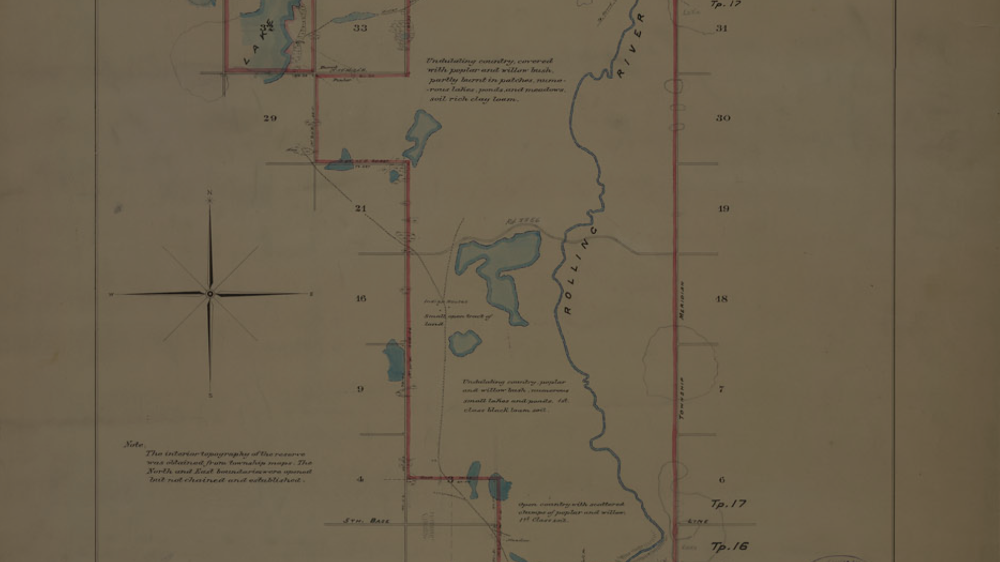

Treaty 2 was signed 21 August 1871 at Manitoba House, Ruperts land,
with representatives of the Queen of Great Britain and Ireland.
This was the second treaty made one year after the province Manitoba joined the Canadian Confederation.
Today's largest city located in Treaty 2 is Brandon, then Dauphin.

Treaty 2 Survey
Treaty No. 2 Survey, Indian Reserve No. 67 for Chief South Quill's band on Rolling River,
Province of Manitoba. Surveyed in November 1894 by A.W. Ponton. Some communities sharing the benefits
of Treaty No. 2 include: Brandon, Dauphin, Melita, Minnedosa, Roblin, Virden and many more.
What communities are involved and their ethnic affiliations?
Treaty 2 was entered into by Dauphin River, Ebb and Flow, Keeseekoowenin,
Lake St. Martin, Lake Manitoba, Little Saskatchewan, O-Chi-Chak-Ki-Sipi, Pinaymootang, and Skownan First Nations.
Treaty 2 extends north and west of Treaty 1 territory, from the east shore of Lake Winnipeg, across the centre and
southwest of Manitoba to the Moose Mountains in southeast Rupertsland.
- The Ojibwe people agreed to give up a large area of their traditional lands to the Crown.
- The Crown set aside reserves for the First Nations to Live on.
- Each member involved in the treaty was to receive an annual payment called annuities.
- The treaty officially acknowledged the Chiefs and headmen, confirming their leadership roles.
Treaty 2 covers a special area in southern Manitoba and parts of Saskatchewan, including the land between Lake Manitoba,
Winnipeg, and Dauphin Lake. The area is rich in natural resources like good soil, forests, and waterways,
which made it valuable to both the Canadian government and Indigenous peoples for farming and transportation.
Long Plain First Nation has similar urban reserves with gas stations and education centers that create jobs and support the community.
These communities are also improving their economies by building new homes, upgrading roads, and developing tourist attractions that highlight their culture.
Some are managing natural resources like forests and mines to benefit financially while caring for the land. Farming projects are helping to produce local food and create jobs.
The Treaty 2 Government is working to gain more control over education, health care, and land management so they can make decisions that help their
communities thrive and maintain their cultural identity.